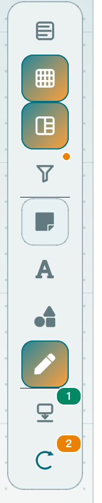

A · REFERENCE SKELETON
黑骨架
最靠近 Miro：统一黑色轮廓、稳定 2.75px 笔画、只让当前工具呈蓝色。
鼠标选择 · 不标注
对照基线
最稳，但仍像“借来的白板”。如果不想复制 Miro，应在形状语义上再走一步。
custom SVG · 24dp · 2.75px面向要在数据画布上快速创建、又不能误触标注的工程师。Miro 的有效之处是：左 rail 的图形足够大、形状轮廓足够独特、只有当前工具显蓝；不是“细线 + 彩色渐变”。本页把鼠标和激光笔一起放进四种完整的图标语言中比较。
最靠近 Miro：统一黑色轮廓、稳定 2.75px 笔画、只让当前工具呈蓝色。
最稳，但仍像“借来的白板”。如果不想复制 Miro，应在形状语义上再走一步。
custom SVG · 24dp · 2.75px这是上一轮的大胆实验：有个性，但其尺寸与笔画偏离既有 ToolRail，因此保留为对照而不再推荐。
读起来是白板工具，但 54px rail / 粗笔画会使它从既有 icon family 中跳出来。
contrast only · superseded by B2从测量工具中提取一条弱基线与青色，工程感更强，但会离 Miro 更远。
可以作为二级面板或分析特有入口，不建议用作通用作者 rail 的主语。
custom SVG · 24dp · 2.2px + baseline收缩到最少像素，接近软件工具箱；它清楚，但没有 Miro 那种手势感。
会和现有软件里密集的小图标混在一起；不适合承担“可创作画布”的入口角色。
qtawesome can emulate · do not choose左图是已有真实前台截图；右图是 B2 的目标渲染。右图只改变鼠标入口、作者工具状态和 active 表达，原有导航类图标维持同一程序化路径。

前一版 B 的 54 px rail、48 px 按钮和 3.2 px 笔画都不属于当前产品，因此天然“另起炉灶”。这一版严格使用现有 64 / 52、40 / 36、20 / 18 的视觉契约。
这一版不是“所有东西都推倒重绘”。既有 Library / Grid / Layout / Filter / Unplaced 的程序化图标保持不动；只新增 Pointer 与 Laser，并让作者工具重用同一条 20 dp 路径、颜色和圆角语法。
_line_icon(..., size=20) 机制。